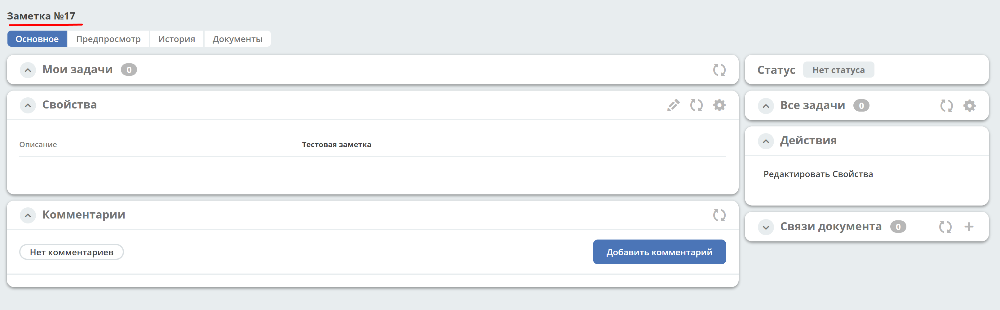
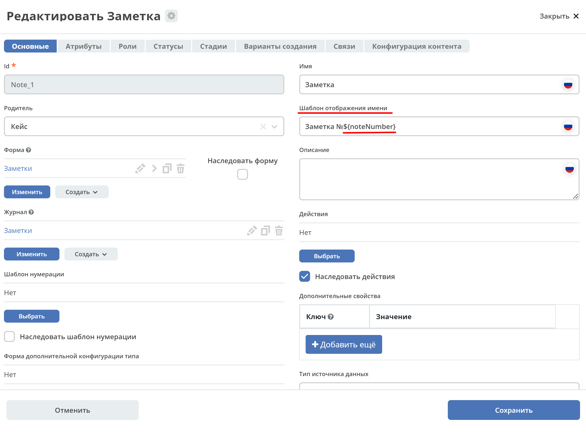
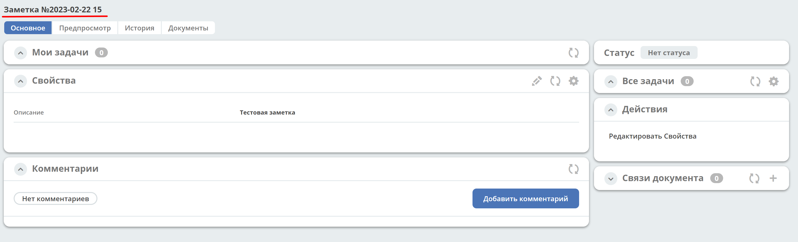

Шаблоны нумерации
Template
Шаблоны нумерации можно полностью настроить через интерфейс ECOS. Шаблоны и счетчики для них хранятся в ecos-model.

Файлы шаблонов создаются и сохраняются в формате: graphml
Number template
Сущность, которая определяет шаблон счетчика на основе текущей даты или полей в сущности, которую мы хотим пронумеровать.
Поля:
id - идентификатор сущности
name - произвольное имя. Справочная информация
counterKey - шаблон ключа счетчика. Может быть как константой (будет создан только 1 счетчик для шаблона), так и с вставками в формате
${атрибут_из_нумеруемой_сущности}. В будущем будет возможность так же использовать текущую дату для шаблона (например, для старта нумерации с 0 каждый год или месяц или день).
Number counter
Сущность, в которой ведется счет
Поля:
key - ключ счетчика. Константное значение, которое получилось после вычисления counterKey в шаблоне нумерации
counter - значение счетчика
Алгоритм работы
В приложении, которое использует шаблоны нумерации, настраивается синхронизация с загрузкой всех шаблонов из ecos-model с целью получения списка атрибутов, которые нужны шаблону.
При создании новой сущности мы берем её тип, из типа получаем шаблон нумерации и если он задан, то достаем список необходимых для шаблона атрибутов. Далее отправляем команду с необходимыми атрибутами в ecos-model для получения следующего значения счетчика. Получив значение счетчика, сохраняем его в одном из полей (в alfresco значение счетчика всегда сохраняется в ecos:docNum).
Для получения значения счетчика следует всегда использовать системный атрибут _docNum (каждый источник ответственен за возвращение актуального значения нумерации по этому атрибуту).
Настройка шаблона в интерфейсе
Перейти в журнал «Шаблоны нумерации» (Инструменты – Модель -Шаблоны нумерации) .
{kind=link}
Нажать + и выбрать «Создать новый шаблон»
Ввести Id, name и counterKey и нажать Submit
{kind=link}
Новый шаблон нумерации создан.
Привязка к типу данных
Шаблон нумерации можно привязать к типу данных по любому из двух вариантов:
C использованием системного атрибута
_docNum, содержащего номер, который генерируется по шаблону:
{kind=link}
с привязкой счетчика к конкретному атрибуту. В поле будет записываться номер из счетчика:
Перейти в настройки атрибута:
Указать тип Counter, storing type On create, выбрать созданный ранее шаблон нумерации, подтвердить:
{kind=link}
{kind=link}
Использование данных счетчика в шаблоне отображения имени
В шаблоне отображения имени можно задать данные счетчика. Например:
Для 1 случая указывается системный атрибут _docNum:
{kind=link}
Для получения следующего отображения имени:
{kind=link}
Для 2 случая указывается атрибут/-ы, к которому привязан счетчик.
{kind=link}
Возможно указать количество символов (заполнение лидирующими нулями): Test №${_docNum|fmt('00000')}
Реализована поддержка для чисел и дат в fmt:
fmt('YYYY.MM', ‘en', ‘GMT+0')
fmt(’00000', 'en')
Например: Заметка №${$now|fmt('yyyy-MM-dd')} ${noteNumber}
Где
now|fmt('yyyy-MM-dd')– текущая дата;noteNumber– атрибут «Регистрационный номер», к которому привязан счетчик.
Для получения следующего отображения имени:
{kind=link}